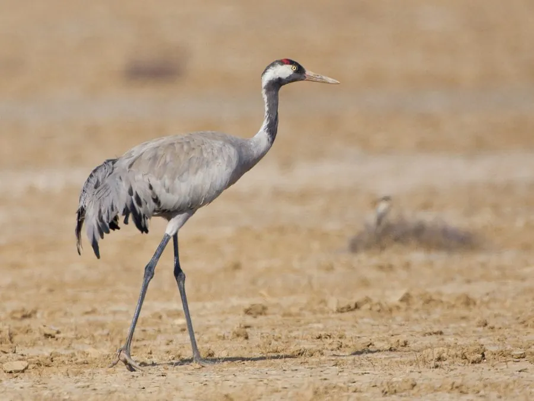

鸟类 · 动物界
灰鹤 Grus grus

分布最广的鹤类之一，通体灰色、颈侧有黑白纵纹，迁徙时排成“V”字形，在中国北方繁殖、南方越冬。
- 分类
- 门脊索动物门纲鸟纲目鹤形目科鹤科属鹤属
- 栖息环境
- 沼泽、湖泊、河漫滩、农田和草原，繁殖期需要大片僻静湿地
- 地理分布
- 繁殖于欧亚大陆北部，越冬于欧洲南部、非洲北部和亚洲南部，中国北方有繁殖、南方越冬
- 保护级别
- IUCN 无危（LC）；中国国家二级保护动物
物种志
灰鹤体长 95–120 cm，体重 3–6 kg，翼展 180–200 cm。身体羽毛以灰色为主，颈部和头顶有黑白相间的纵纹，头顶有一小块红色裸皮，喉部和颈前为黑色，飞羽末端深色，腿黑色。它的体形修长，站立时颈项挺直，行走时步态从容。
灰鹤是分布最广的鹤类之一，从欧洲北部到西伯利亚都能繁殖，冬季南迁到欧洲南部、非洲北部和亚洲南部。中国新疆、内蒙古、黑龙江等地有繁殖种群，华北和长江流域是重要越冬区。它们吃植物根茎、谷物、昆虫和小型脊椎动物，常在农田和沼泽中觅食。繁殖期每窝产卵 2 枚，孵化 28–31 天，双亲共同育雏。由于种群数量较大且分布广泛，灰鹤被列为无危物种，中国将其列为国家二级保护动物。
形态与习性
- 食性植物根茎、谷物、昆虫、蛙类和小鱼
- 体长95–120 cm
- 体重3–6 kg
- 翼展180–200 cm
- 繁殖每窝 2 枚卵，孵化 28–31 天
- 寿命野外约 20–30 年
- 迁徙秋季结群南迁，飞行时排成“V”字形
趣味知识
- 灰鹤头顶有一小块红色裸皮，情绪激动时颜色会变得更鲜艳。
- 灰鹤是分布最广的鹤类，从欧洲到东亚都有繁殖种群。
- 越冬时它们常在农田里觅食玉米、稻谷和麦苗。
- 灰鹤的叫声高亢洪亮，可以传到数千米之外。